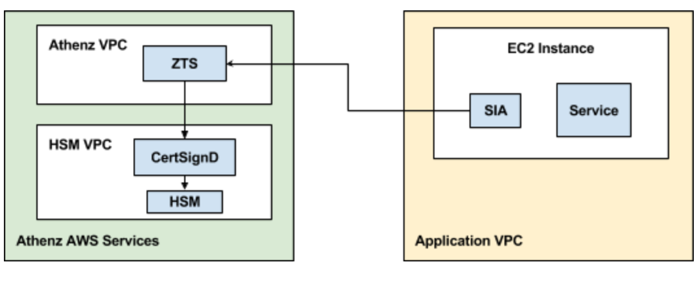

Athenz Service Identity X.509 Certificate for AWS EC2 instances

Bootstrapping AWS EC2 instances with Athenz Service x.509 Identities requires the instances to have network connectivity to both Athenz ZTS and AWS STS Services.
Domain Registration
Identify your Athenz domain before you can proceed by using Athenz UI.
You may create a top-level domain or a sub domain using Athenz UI or zms-cli. Only Athenz System Administrators can create top level domains (members of the sys.auth domain's admin role). To create a top-level domain using zms-cli run the following:
zms-cli add-domakn <domain-name> <unique-product-id> <domain-admins separated by space>
If you already have top-level domain and need to create a sub domain using Athenz UI: click the "Create” link next to "My Domains" label in the top right corner and then click on “Sub Domain” tab and follow the on screen instruction.

Or using zms-cli:
zms-cli add-doman <top-doman.sub-domain-name> <domain-admins separated by space>
AWS Account ID Registration
To register an AWS Account with a domain, run the following command:
zms-cli -d <domain-name> set-aws-account <aws-account-id>
Athenz Service Identity Registration
Create a service identity for your AWS EC2 instances in your Athenz domain. This full service identity name <domain>.<service> will be the IAM role name that you will need to create in AWS IAM and set up a trust relationship with your EC2 Instance Role.
In the Athenz UI, select your domain, select the Services tab and then choose Add a Service link in the top left corner. You must provide a service name and an optional description for your service.

Athenz Service Identity Authorization
Before ZTS can validate and issue X.509 TLS Certificates to the
AWS EC2 instance, it must validate that the service owner has
authorized its service to be launched by AWS EC2 Provider. In the
Athenz UI select your service that was created in the previous
step and click on the icon in the Providers column:

Then, click on the Allow button to authorize your service to
be launched by AWS EC2 provider.

IAM Role Setup
There are two IAM roles required for instances to obtain Athenz X.509 certificates:
- EC2 Instance Profile Role
- Athenz Service Identity Assume Role
It is assumed that at this point you have already configured the first EC2 Instance Profile IAM Role that your EC2 instance will be launched with.
The second Athenz Service Identity IAM Assume Role must be created and
must have the <domain>.<service> name. This role will not have any
permissions but instead will have a trust relationship with your EC2
instance role such that your EC2 instance role can assume this role.
In the AWS Console, select IAM from the Services drop down and then
click on the Roles link in the left sidebar. Choose the Create Role
button. Under the AWS Service type, select EC2, then EC2 again
for the use case and finally choose Next: Permissions button in the
bottom right corner.

In the Attach permissions policy screen do not choose any permissions
and just click on the Next: Review button in the bottom right corner
to continue. Specify the Role name in the <domain>.<service> format
and choose Create Role to complete the process.
In the Roles list view, choose the role just created and choose the
Trust Relationships tab.

Click on Edit trust relationship button and append a block containing
the following policy to the Statement block (Replace the <account-id>
and <ec2-instance-role> values with their corresponding values for
your environment:
{
"Effect": "Allow",
"Principal": {
"AWS": "arn:aws:iam::<account-id>:role/<ec2-instance-role>"
},
"Action": "sts:AssumeRole"
}
Once correctly updated, your EC2 instance role must appear in the Trusted entities table:

Setup for Services with Region Specific Instance Profile Roles
The IAM Role setup is identical when you have the same service
being deployed in multiple regions with role names that
are specific to each region. Since IAM roles are global, you only need
to create a single Athenz IAM Role in the <domain>.<service> format.
Then, when you're setting up your trust relationship, you'll authorize
all your region specific profile roles to have the capability to
assume the Athenz <domain>.<service> role.
Installing SIA
The AWS SIA source is part of the Athenz project and can be found in:
provider/aws/sia-ec2
Follow the readme for instructions on how to install it.
SIA Configuration Setup
When building your image, you can include the following configuration
file called sia_config in the /etc/sia directory. It must include
the following required fields:
{
"version": "1.0.0",
"service": "<service name>",
"accounts": [
{
"domain": "<domain name>",
"account": "<aws account id associated with domain name>"
}
]
}
The domain/account/service values here must match to the IAM Role
created earlier. For example, if the service identity name is api
in domain sports whose corresponding aws account id is 123456789,
then the sia_config file will be as follows:
{
"version": "1.0.0",
"service": "api",
"accounts": [
{
"domain": "sports",
"account": "123456789"
}
]
}
Private Key File Ownership
By default SIA agent runs as root and the private key is only readable
by root. If your service is running as another user, you can configure
SIA agent to automatically change the ownership of the private key file
to the configured user.
For example, if you want the private key to be owned by ec2-user, then
your sia_config configuration file would be as follows:
{
"version": "1.0.0",
"service": "api",
"accounts": [
{
"domain": "sports",
"account": "123456789",
"user": "ec2-user"
}
]
}
Private Key and Certificate Setup
By default, the private key for the service identity is available in
the /var/lib/sia/keys directory and has the name <domain>.<service>.key.pem.
The private key is in PKCS#1 format. The corresponding X.509 certificate
is in the /var/lib/sia/certs directory and has the name
<domain>.<service>.cert.pem. The certificate is valid for 30 days and will
be refreshed automatically by SIA every day. It is the responsibility of the
application owner to update their container/application to refresh and use
the latest certificate before it expires. In the same /var/lib/sia/certs
directory SIA will also generate the Athenz CA certificate file called ca.cert.pem.
Role Certificate Support
In addition to requesting Athenz service identity certificate, SIA provides the capability to request Athenz Role Certificates as well. If you want to change the default behavior or request SIA to automatically retrieve role certificates for your service, as part of building your ami image, you can include the following additional fields in the configuration file:
{
"version": "1.0.0",
"service": "<service name>",
"accounts": [
{
"domain": "<domain name>",
"account": "<aws account id associated with domain name>",
"roles": {
"<role-domain1>:role.<role-name1>": {
},
"<role-domain2>:role.<role-name2>": {
}
}
}
]
}
The role certificates will also be stored in the /var/lib/sia/certs directory
and have the name of <role-domain1>:role.<role-name1>.cert.pem. They are also
valid for 30 days and SIA will automatically refresh them once a day.
Setup Without SIA Configuration File
If a property deploying their service in AWS meets the following 2 requirements:
- does not need any role certificates to be retrieved by SIA automatically
- has the option to name their EC2 instance role
then they have the option for a simpler setup without including a sia configuration file in their image.
In this model, the property would name their EC2 instance role as
<domain>.<service>-service. The property must still follow the full steps as
described in the IAM Role Setup section to setup the
<domain>.<service> role, but the requirement to have a sia_config file is
no longer present. When SIA is running and is not able to find the sia_config
file, it will check if the instance profile arn has the <domain>.<service>-service
format. If it does, then it would drop -service part to parse the rest of the
string to extract the Athenz domain and service values and determine the assume
role name that it needs to fetch temporary credentials for before contacting ZTS Server.
Non Standard Instance Profile Name
If a property deploying their service in AWS does not have the
capability to name their instance profile role name as
<domain>.<service>-service due to legacy requirements, the following
steps can be followed to configure SIA to use the non-standard
instance profile name.
- The property must still follow the full steps as
described in the IAM Role Setup section to setup the
<domain>.<service>role and the trust relationship. - The property must install a SIA config file
/etc/sia/sia_configspecifying the service name that will be deployed on this instance
Independent Instance Profile and Role Names
It is possible to setup only a single role within AWS IAM in the format
<domain>.<service> and name the IAM profile name as <domain>.<service>-service
without creating a separate role. However, there is currently no support in the
AWS UI console for naming your IAM role and IAM instance profile independently.
You can do this with Cloud Formation, Ansible, TF, the AWS API, or the CLI.
Here is an example using the CLI - replace <domain>, <service> and
<account-id> parameters with their respective values for your environment:
aws iam create-role --role-name <domain>.<service> --assume-role-policy-document='{"Version":"2012-10-17","Statement":[{"Effect":"Allow","Principal":{"Service":"ec2.amazonaws.com"},"Action":"sts:AssumeRole"}]}'
aws iam create-instance-profile --instance-profile-name <domain>.<service>-service
aws iam update-assume-role-policy --role-name <domain>.<service> --policy-document '{"Version":"2012-10-17","Statement":[{"Effect":"Allow","Principal":{"Service":"ec2.amazonaws.com"},"Action":"sts:AssumeRole"},{"Effect":"Allow","Principal":{"AWS":"arn:aws:iam::<account-id>:role/<domain>.<service>"},"Action":"sts:AssumeRole"}]}'
aws iam add-role-to-instance-profile --instance-profile-name <domain>.<service>-service --role-name <domain>.<service>
However, this model is not recommended from security perspective if your
<domain>.<service> role has access to other AWS services. Temporary credentials
for that role are sent to Athenz ZTS service as your authentication credentials
and, as such, you do not want to expose those additional access capabilities
to the ZTS Server.
Troubleshooting
SIA process outputs all of its messages to syslog, so if there are any issues
with your configuration, it will be reported in syslog. You can execute:
sudo grep siad /var/log/messages and see what operation sia was not able
to complete successfully. The agent is configured to run every 20 seconds in
case of a failure, so you'll most likely see the same block being repeated
multiple times. ZTS server allows instances to obtain x.509 certificates only
during the first 30 minutes after the initial bootstrap time so even if you
address the configuration issues, once the 30 mins have passed, the instance
will no longer be able to obtain its x.509 service identity certificate. The
only option at that time is to terminate and launch a new instance.